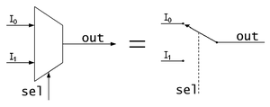

Estos circuitos combinacionales poseen 2^n líneas de entrada de datos, una línea de salida y n entradas de selección. Las entradas de selección indican cuál de estas líneas de entrada de datos es la que proporciona el valor a la línea de salida. Cada combinación de las entradas de selección corresponde a una entrada de datos, y la salida final del multiplexor corresponderá al valor de dicha entrada seleccionada.
En electrónica digital, es usado para el control de un flujo de información que equivale a un conmutador. En su forma más básica se compone de dos entradas de datos (A y B), una salida de datos y una entrada de control. Cuando la entrada de control se pone a 0 lógico, la señal de datos A es conectada a la salida; cuando la entrada de control se pone a 1 lógico, la señal de datos B es la que se conecta a la salida.